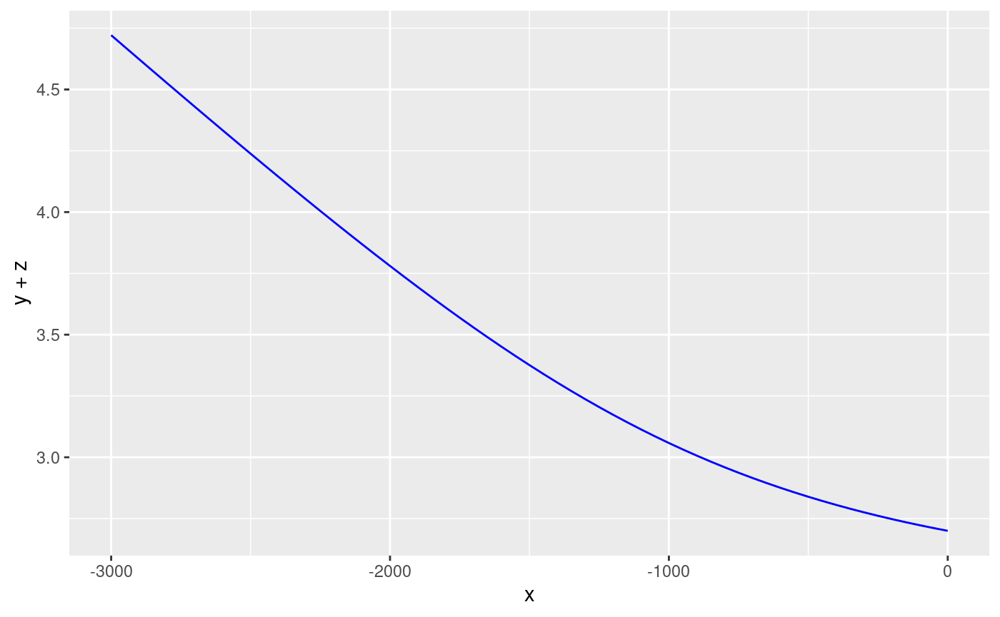
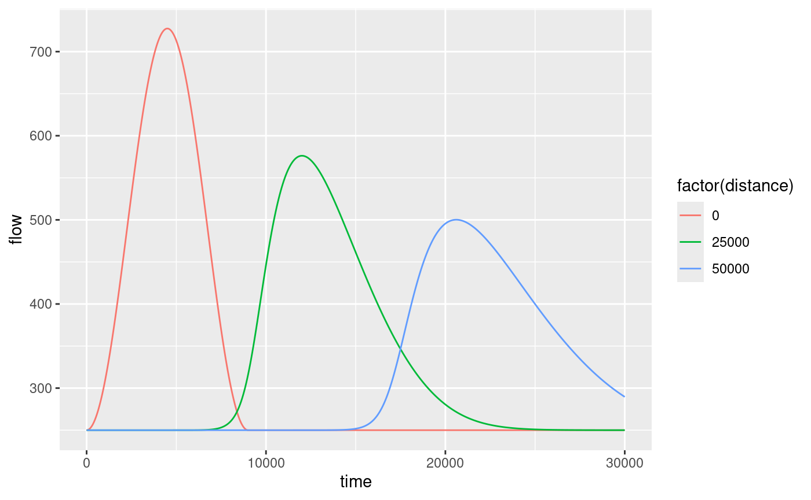

Overview
rivr provides functions for calculating the normal depth
and critical depth, computing gradually-varied flow profiles, and
solving the unsteady flow equations using finite-differencing methods.
Outputs are formatted for manipulation with dplyr and
visualization with ggplot2. This vignette provides a brief
introduction to the main functions and example applications.
Class methods
The rivr package defines a new class rivr,
which is essentially an extension of the data.frame class
with additional atributes. The following methods are defined for class
rivr:
headtailprintsummaryplot
Computing normal and critical depth
The normal depth \(y_n\) is defined
as the flow depth at which \[
Q = \frac{C_m}{n} AR^{2/3}S_0^{1/2}
\] Where \(Q\) is the flow rate,
\(n\) is Manning’s coefficient, \(A\) is the cross-sectional flow area (also
a function of flow depth), \(R\) is the
hydraulic radius and \(S_0\) is the bed
slope. The critical depth \(y_c\) is
defined as the flow depth at which \[
\frac{dE}{dy} = 1 - \frac{Q^2}{gA^3}\frac{dA}{dy} = 0.
\] Both \(y_n\) and \(y_c\) are non-linear functions of \(y\). rivr provides functions
for computing normal and critical depths, as shown below. In both cases
a Newton-Raphson scheme is used to solved the equations.
require(rivr)
flow = 250; mannings = 0.045 ; Cm = 1.486; gravity = 32.2
width = 100; slope = 0.001; sideslope = 0
yn = normal_depth(slope, mannings, flow, yopt = 2, Cm, width, sideslope)
yc = critical_depth(flow, yopt = 2, gravity, width, sideslope)
print(c(normal.depth = yn, critical.depth = yc))## normal.depth critical.depth
## 1.7113010 0.5789949Standard-step method for gradually-varied flow profiles
The standard step method can be used to solve steady-state water surface profiles. The solution to gradually-varied flow profiles is based on the non-linear ordinary differential equation \[ \frac{dy}{dx} = \frac{S_0 - S_f}{1 - Fr^2} \] and is appropriate for cases where \(\frac{dy}{dx}\) is small. The standard-step method operates by stepping along the channel by a constant distance interval, starting from a cross-section where the flow depth is known (the control section). The flow depth is computed at the adjacent cross-section (target section). The computed value at the target is then used as the basis for computing flow depth at the next cross-section, i.e. the previous target section becomes the new control section for each step. A Newton-Raphson scheme is used each step to compute the flow depth and friction slope. Technically, the average friction slope of the control and target section is used to compute the flow depth at the target section.
flow = 250; mannings = 0.045 ; Cm = 1.486; gravity = 32.2
width = 100; slope = 0.001; sideslope = 0
gvf = compute_profile(slope, mannings, flow, y0 = 2.7, Cm, gravity, width,
sideslope, stepdist=50, totaldist=3000)While a plot method is defined for rivr
objects, the output is also formatted for easy visualization with
ggplot2.
require(ggplot2)
ggplot(gvf, aes(x = x, y = y + z)) + geom_line(color='blue')
# or try the default plot method
# plot(gvf)
Unsteady flow
Unsteady flow models solve the shallow water equations (conservation
of mass and conservation of momentum). Kinematic wave models (KWM) use a
truncated form of the momentum equation while dynamic wave models (DWM)
solve the mass and momentum equations simultaneously. A variety of
numerical schemes can be used to solve these equations.
rivr provides an interface to multiple explicit finite
differencing schemes (one KWM scheme and two DWM schemes) for computing
unsteady flows. The MacCormack scheme is recommended for most
applications.
baseflow = 250; mannings = 0.045 ; Cm = 1.486; gravity = 32.2
width = 100; slope = 0.001; sideslope = 0
numnodes = 301; xresolution = 250; tresolution = 10;
times = seq(0, 30000, by = tresolution)
wave = ifelse(times >= 9000, baseflow,
baseflow + (750/pi)*(1 - cos(pi*times/(60*75))))
downstream = rep(-1, length(wave))
mn = c(1, 101, 201)
mt = c(501, 1501, 3001)
uf = route_wave(slope, mannings, Cm, gravity, width, sideslope,
baseflow, wave, downstream, tresolution, xresolution, numnodes,
mn, mt, "Dynamic", "MacCormack", "QQ") Methods are defined for printing and summarizing rivr
objects. Accessing the unsteady flow outputs for in-depth analysis is
greatly simplified by using dplyr.
require(dplyr)
uf.nodes = filter(uf, monitor.type == "node")
ggplot(uf.nodes, aes(x=time, y=flow, color=factor(distance))) + geom_line()
uf.times = filter(uf, monitor.type == "timestep")
ggplot(uf.times, aes(x=distance, y=flow, color=factor(time))) + geom_line()
# or try the default plot method
# plot(uf)